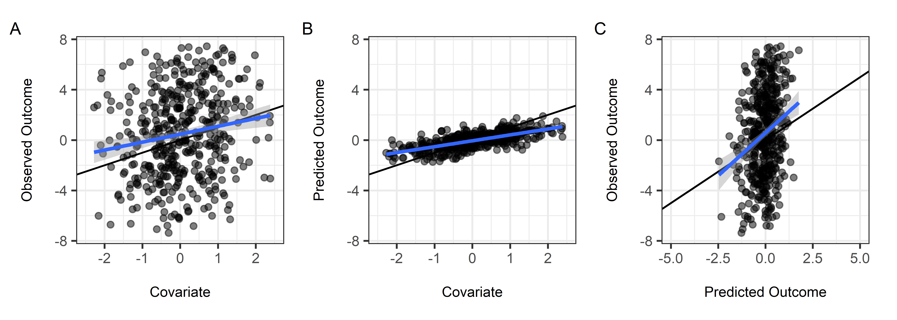

Overview
ipd is an open-source R software package for the downstream modeling of an outcome and its associated features where a potentially sizable portion of the outcome data has been imputed by an artificial intelligence or machine learning (AI/ML) prediction algorithm. The package implements several recent proposed methods for inference on predicted data (IPD) with a single, user-friendly wrapper function, ipd. The package also provides custom print, summary, tidy, glance, and augment methods to facilitate easy model inspection.
Background
Using predictions from pre-trained algorithms as outcomes in downstream statistical analyses can lead to biased estimates and misleading conclusions. The statistical challenges encountered when drawing inference on predicted data (IPD) include:
- Understanding the relationship between predicted outcomes and their true, unobserved counterparts.
- Quantifying the robustness of the AI/ML models to resampling or uncertainty about the training data.
- Appropriately propagating both bias and uncertainty from predictions into downstream inferential tasks.
Several works have proposed methods for IPD, including post-prediction inference (PostPI) by Wang et al., 2020, prediction-powered inference (PPI) and PPI++ by Angelopoulos et al., 2023a and Angelopoulos et al., 2023b, post-prediction adaptive inference (PSPA) by Miao et al., 2023, and a correction based on the Chen and Chen method and alternate PPI “All” by Gronsbell et al., 2025. Each method was developed to perform inference on a quantity such as the outcome mean or quantile, or a regression coefficient, when we have:
- A dataset consisting of our outcome and features of interst, where the outcome is only observed for a small ‘labeled’ subset and missing for a, typically larger, ‘unlabeled’ subset.
- Access to an algorithm to predict the missing outcome in the entire dataset using the fully observed features.

We can use these methods for IPD to obtain corrected estimates and standard errors by using the predicted outcomes and unlabeled features to augment the labeled subset of the data.
To enable researchers and practitioners interested in these state-of-the-art methods, we have developed the ipd package in R to implement these methods under the umbrella of IPD. This README provides an overview of the package, including installation instructions, basic usage examples, and links to further documentation. The examples show how to generate data, fit models, and use custom methods provided by the package.
Installation
To install the ipd package from Bioconductor, you can use the BiocManager package:
#-- Install BiocManager if it is not already installed
if (!require("BiocManager", quietly = TRUE))
install.packages("BiocManager")
BiocManager::install(version = "3.21")
#-- Install the ipd package from Bioconductor
BiocManager::install("ipd")Or, to install the development version of ipd from GitHub, you can use the devtools package:
#-- Install devtools if it is not already installed
install.packages("devtools")
#-- Install the ipd package from GitHub
devtools::install_github("ipd-tools/ipd")Usage
We provide a simple example to demonstrate the basic use of the functions included in the ipd package.
Data Generation
You can generate synthetic datasets for different types of regression models using the provided simdat function by specifying the sizes of the datasets, the effect size, residual variance, and the type of model. The function currently supports “mean”, “quantile”, “ols”, “logistic”, and “poisson” models. The simdat function generate a data.frame with three subsets: (1) an independent “training” set with additional observations used to fit a prediction model, and “labeled” and “unlabeled” sets which contain the observed and predicted outcomes and the simulated features of interest.
#-- Generate Example Data for Linear Regression
set.seed(123)
n <- c(10000, 500, 1000)
dat <- simdat(n = n, effect = 1, sigma_Y = 4, model = "ols",
shift = 1, scale = 2)
#-- Print First 6 Rows of Training, Labeled, and Unlabeled Subsets
options(digits = 2)
head(dat[dat$set_label == "training", ])
#> X1 X2 X3 X4 Y f set_label
#> 1 -0.560 -0.56 0.82 -0.356 -0.15 NA training
#> 2 -0.230 0.13 -1.54 0.040 -4.49 NA training
#> 3 1.559 1.82 -0.59 1.152 -1.08 NA training
#> 4 0.071 0.16 -0.18 1.485 -3.67 NA training
#> 5 0.129 -0.72 -0.71 0.634 2.19 NA training
#> 6 1.715 0.58 -0.54 -0.037 -1.42 NA training
head(dat[dat$set_label == "labeled", ])
#> X1 X2 X3 X4 Y f set_label
#> 10001 2.37 -1.8984 0.20 -0.17 1.40 1.120 labeled
#> 10002 -0.17 1.7428 0.26 -2.05 3.56 0.017 labeled
#> 10003 0.93 -1.0947 0.76 1.25 -3.66 0.686 labeled
#> 10004 -0.57 0.1757 0.32 0.65 -0.56 -0.212 labeled
#> 10005 0.23 2.0620 -1.35 1.46 -0.82 -0.573 labeled
#> 10006 1.13 -0.0028 0.23 -0.24 7.30 0.579 labeled
head(dat[dat$set_label == "unlabeled", ])
#> X1 X2 X3 X4 Y f set_label
#> 10501 0.99 -3.280 -0.39 0.97 8.4 0.124 unlabeled
#> 10502 -0.66 0.142 -1.36 -0.22 -7.2 -1.040 unlabeled
#> 10503 0.58 -1.368 -1.73 0.15 5.6 -0.653 unlabeled
#> 10504 -0.14 -0.728 0.26 -0.23 -4.2 -0.047 unlabeled
#> 10505 -0.17 -0.068 -1.10 0.58 2.2 -0.693 unlabeled
#> 10506 0.58 0.514 -0.69 0.97 -1.2 -0.122 unlabeledThe simdat function provides observed and unobserved outcomes for both the labeled and unlabeled datasets, though in practice the observed outcomes are not in the unlabeled set. We can visualize the relationships between these variables:

We can see that:
- The predicted outcomes are more correlated with the covariate than the true outcomes (panels A and B).
- The predicted outcomes are not perfect substitutes for the true outcomes (panel C).
Model Fitting
We compare two non-IPD approaches to analyzing the data to methods included in the ipd package. The two non-IPD benchmarks are the ‘naive’ method and the ‘classic’ method. The ‘naive’ treats the predicted outcomes as if they were observed and regresses the predictions on the covariates of interest without calibration. The ‘classic’ uses only the subset of labeled observations where we observe the true outcome. The IPD methods are listed in alphabetical order by method name. A summary comparison is provided in the table below, followed by the specific calls for each method:
#> Estimate Std. Error
#> Naive 0.49 0.015
#> Classic 1.10 0.192
#> Chen and Chen 1.11 0.186
#> PostPI (Bootstrap) 1.16 0.183
#> PostPI (Analytic) 1.13 0.191
#> PPI 1.11 0.195
#> PPI All 1.11 0.195
#> PPI++ 1.10 0.190
#> PSPA 1.09 0.190We can see that the IPD methods have similar estimates and standard errors, while the ‘naive’ method has a different estimate and standard errors that are too small. We compare two non-IPD approaches to analyzing the data to methods included in the ipd package in more detail below.
‘Naive’ Regression Using the Predicted Outcomes
#--- Fit the Naive Regression
lm(f ~ X1, data = dat[dat$set_label == "unlabeled", ]) |>
summary()
#>
#> Call:
#> lm(formula = f ~ X1, data = dat[dat$set_label == "unlabeled",
#> ])
#>
#> Residuals:
#> Min 1Q Median 3Q Max
#> -1.2713 -0.3069 -0.0076 0.3173 1.4453
#>
#> Coefficients:
#> Estimate Std. Error t value Pr(>|t|)
#> (Intercept) -0.0805 0.0148 -5.42 7.4e-08 ***
#> X1 0.4924 0.0148 33.32 < 2e-16 ***
#> ---
#> Signif. codes: 0 '***' 0.001 '**' 0.01 '*' 0.05 '.' 0.1 ' ' 1
#>
#> Residual standard error: 0.47 on 998 degrees of freedom
#> Multiple R-squared: 0.527, Adjusted R-squared: 0.526
#> F-statistic: 1.11e+03 on 1 and 998 DF, p-value: <2e-16‘Classic’ Regression Using only the Labeled Data
#--- Fit the Classic Regression
lm(Y ~ X1, data = dat[dat$set_label == "labeled", ]) |>
summary()
#>
#> Call:
#> lm(formula = Y ~ X1, data = dat[dat$set_label == "labeled", ])
#>
#> Residuals:
#> Min 1Q Median 3Q Max
#> -15.262 -2.828 -0.094 2.821 11.685
#>
#> Coefficients:
#> Estimate Std. Error t value Pr(>|t|)
#> (Intercept) 0.908 0.187 4.86 1.6e-06 ***
#> X1 1.097 0.192 5.71 1.9e-08 ***
#> ---
#> Signif. codes: 0 '***' 0.001 '**' 0.01 '*' 0.05 '.' 0.1 ' ' 1
#>
#> Residual standard error: 4.2 on 498 degrees of freedom
#> Multiple R-squared: 0.0614, Adjusted R-squared: 0.0596
#> F-statistic: 32.6 on 1 and 498 DF, p-value: 1.95e-08You can fit the various IPD methods to your data and obtain summaries using the provided wrapper function, ipd():
Chen and Chen Correction (Gronsbell et al., 2025)
#-- Specify the Formula
formula <- Y - f ~ X1
#-- Fit the Chen and Chen Correction
ipd::ipd(formula, method = "chen", model = "ols",
data = dat, label = "set_label") |>
summary()
#>
#> Call:
#> Y - f ~ X1
#>
#> Method: chen
#> Model: ols
#> Intercept: Yes
#>
#> Coefficients:
#> Estimate Std. Error z value Pr(>|z|)
#> (Intercept) 0.880 0.182 4.83 1.3e-06 ***
#> X1 1.114 0.186 5.98 2.2e-09 ***
#> ---
#> Signif. codes: 0 '***' 0.001 '**' 0.01 '*' 0.05 '.' 0.1 ' ' 1PostPI Bootstrap Correction (Wang et al., 2020)
#-- Fit the PostPI Bootstrap Correction
nboot <- 200
ipd::ipd(formula, method = "postpi_boot", model = "ols",
data = dat, label = "set_label", nboot = nboot) |>
summary()
#>
#> Call:
#> Y - f ~ X1
#>
#> Method: postpi_boot
#> Model: ols
#> Intercept: Yes
#>
#> Coefficients:
#> Estimate Std. Error z value Pr(>|z|)
#> (Intercept) 0.866 0.183 4.73 2.2e-06 ***
#> X1 1.164 0.183 6.38 1.8e-10 ***
#> ---
#> Signif. codes: 0 '***' 0.001 '**' 0.01 '*' 0.05 '.' 0.1 ' ' 1PostPI Analytic Correction (Wang et al., 2020)
#-- Fit the PostPI Analytic Correction
ipd::ipd(formula, method = "postpi_analytic", model = "ols",
data = dat, label = "set_label") |>
summary()
#>
#> Call:
#> Y - f ~ X1
#>
#> Method: postpi_analytic
#> Model: ols
#> Intercept: Yes
#>
#> Coefficients:
#> Estimate Std. Error z value Pr(>|z|)
#> (Intercept) -0.187 0.187 -1.00 0.32
#> X1 1.128 0.191 5.92 3.3e-09 ***
#> ---
#> Signif. codes: 0 '***' 0.001 '**' 0.01 '*' 0.05 '.' 0.1 ' ' 1Prediction-Powered Inference (PPI; Angelopoulos et al., 2023)
#-- Fit the PPI Correction
ipd::ipd(formula, method = "ppi", model = "ols",
data = dat, label = "set_label") |>
summary()
#>
#> Call:
#> Y - f ~ X1
#>
#> Method: ppi
#> Model: ols
#> Intercept: Yes
#>
#> Coefficients:
#> Estimate Std. Error z value Pr(>|z|)
#> (Intercept) 0.890 0.183 4.87 1.1e-06 ***
#> X1 1.110 0.195 5.69 1.3e-08 ***
#> ---
#> Signif. codes: 0 '***' 0.001 '**' 0.01 '*' 0.05 '.' 0.1 ' ' 1PPI “All” (Gronsbell et al., 2025)
#-- Fit the PPI Correction
ipd::ipd(formula, method = "ppi_a", model = "ols",
data = dat, label = "set_label") |>
summary()
#>
#> Call:
#> Y - f ~ X1
#>
#> Method: ppi_a
#> Model: ols
#> Intercept: Yes
#>
#> Coefficients:
#> Estimate Std. Error z value Pr(>|z|)
#> (Intercept) 0.896 0.183 4.91 9.2e-07 ***
#> X1 1.106 0.195 5.67 1.4e-08 ***
#> ---
#> Signif. codes: 0 '***' 0.001 '**' 0.01 '*' 0.05 '.' 0.1 ' ' 1PPI++ (Angelopoulos et al., 2023)
#-- Fit the PPI++ Correction
ipd::ipd(formula, method = "ppi_plusplus", model = "ols",
data = dat, label = "set_label") |>
summary()
#>
#> Call:
#> Y - f ~ X1
#>
#> Method: ppi_plusplus
#> Model: ols
#> Intercept: Yes
#>
#> Coefficients:
#> Estimate Std. Error z value Pr(>|z|)
#> (Intercept) 0.904 0.185 4.87 1.1e-06 ***
#> X1 1.100 0.190 5.78 7.5e-09 ***
#> ---
#> Signif. codes: 0 '***' 0.001 '**' 0.01 '*' 0.05 '.' 0.1 ' ' 1Post-Prediction Adaptive Inference (PSPA; Miao et al., 2023)
#-- Fit the PSPA Correction
ipd::ipd(formula, method = "pspa", model = "ols",
data = dat, label = "set_label") |>
summary()
#>
#> Call:
#> Y - f ~ X1
#>
#> Method: pspa
#> Model: ols
#> Intercept: Yes
#>
#> Coefficients:
#> Estimate Std. Error z value Pr(>|z|)
#> (Intercept) 0.900 0.185 4.87 1.1e-06 ***
#> X1 1.095 0.190 5.76 8.5e-09 ***
#> ---
#> Signif. codes: 0 '***' 0.001 '**' 0.01 '*' 0.05 '.' 0.1 ' ' 1Printing and Tidying
The package also provides custom print, summary, tidy, glance, and augment methods to facilitate easy model inspection:
#-- Fit the PostPI Bootstrap Correction
nboot <- 200
fit_postpi <- ipd::ipd(formula, method = "postpi_boot", model = "ols",
data = dat, label = "set_label", nboot = nboot)
#-- Print the Model
print(fit_postpi)
#> IPD inference summary
#> Method: postpi_boot
#> Model: ols
#> Formula: Y - f ~ X1
#>
#> Coefficients:
#> Estimate Std. Error z value Pr(>|z|)
#> (Intercept) 0.860 0.183 4.71 2.5e-06 ***
#> X1 1.148 0.182 6.30 3.1e-10 ***
#> ---
#> Signif. codes: 0 '***' 0.001 '**' 0.01 '*' 0.05 '.' 0.1 ' ' 1
#-- Summarize the Model
summ_fit_postpi <- summary(fit_postpi)
#-- Print the Model Summary
print(summ_fit_postpi)
#>
#> Call:
#> Y - f ~ X1
#>
#> Method: postpi_boot
#> Model: ols
#> Intercept: Yes
#>
#> Coefficients:
#> Estimate Std. Error z value Pr(>|z|)
#> (Intercept) 0.860 0.183 4.71 2.5e-06 ***
#> X1 1.148 0.182 6.30 3.1e-10 ***
#> ---
#> Signif. codes: 0 '***' 0.001 '**' 0.01 '*' 0.05 '.' 0.1 ' ' 1
#-- Tidy the Model Output
tidy(fit_postpi)
#> # A tibble: 2 × 5
#> term estimate std.error conf.low conf.high
#> <chr> <dbl> <dbl> <dbl> <dbl>
#> 1 (Intercept) 0.860 0.183 0.502 1.22
#> 2 X1 1.15 0.182 0.790 1.50
#-- Get a One-Row Summary of the Model
glance(fit_postpi)
#> # A tibble: 1 × 6
#> method model intercept nobs_labeled nobs_unlabeled call
#> <chr> <chr> <lgl> <int> <int> <chr>
#> 1 postpi_boot ols TRUE 500 1000 Y - f ~ X1
#-- Augment the Original Data with Fitted Values and Residuals
augmented_df <- augment(fit_postpi)
head(augmented_df)
#> X1 X2 X3 X4 Y f set_label .fitted .resid
#> 10501 0.99 -3.280 -0.39 0.97 8.4 0.124 unlabeled 1.992 6.5
#> 10502 -0.66 0.142 -1.36 -0.22 -7.2 -1.040 unlabeled 0.099 -7.3
#> 10503 0.58 -1.368 -1.73 0.15 5.6 -0.653 unlabeled 1.522 4.1
#> 10504 -0.14 -0.728 0.26 -0.23 -4.2 -0.047 unlabeled 0.702 -4.9
#> 10505 -0.17 -0.068 -1.10 0.58 2.2 -0.693 unlabeled 0.667 1.5
#> 10506 0.58 0.514 -0.69 0.97 -1.2 -0.122 unlabeled 1.521 -2.7Vignette
For additional details, we provide more use cases and examples in the package vignette:
vignette("ipd")Feedback
For questions, comments, or any other feedback, please contact the developers (ssalerno@fredhutch.org).
Contributing
Contributions are welcome! Please open an issue or submit a pull request on GitHub. The following method/model combinations are currently implemented:
| Method | Mean Estimation | Quantile Estimation | Linear Regression | Logistic Regression | Poisson Regression | |
|---|---|---|---|---|---|---|
| Chen and Chen | ❌ | ❌ | ✅ | ❌ | ❌ | |
| PostPI | ❌ | ❌ | ✅ | ✅ | ❌ | |
| PPI | ✅ | ✅ | ✅ | ✅ | ❌ | |
| PPI++ | ✅ | ✅ | ✅ | ✅ | ❌ | |
| PPIa | ❌ | ❌ | ✅ | ❌ | ❌ | |
| PSPA | ✅ | ✅ | ✅ | ✅ | ✅ |
Session Info
sessionInfo()
#> R version 4.4.1 (2024-06-14 ucrt)
#> Platform: x86_64-w64-mingw32/x64
#> Running under: Windows 11 x64 (build 22631)
#>
#> Matrix products: default
#>
#>
#> locale:
#> [1] LC_COLLATE=English_United States.utf8
#> [2] LC_CTYPE=English_United States.utf8
#> [3] LC_MONETARY=English_United States.utf8
#> [4] LC_NUMERIC=C
#> [5] LC_TIME=English_United States.utf8
#>
#> time zone: America/New_York
#> tzcode source: internal
#>
#> attached base packages:
#> [1] stats graphics grDevices utils datasets methods base
#>
#> other attached packages:
#> [1] patchwork_1.3.0 lubridate_1.9.4 forcats_1.0.0 stringr_1.5.1
#> [5] dplyr_1.1.4 purrr_1.0.2 readr_2.1.5 tidyr_1.3.1
#> [9] tibble_3.2.1 ggplot2_3.5.2 tidyverse_2.0.0 ipd_0.99.0
#>
#> loaded via a namespace (and not attached):
#> [1] gtable_0.3.6 xfun_0.52 recipes_1.2.1
#> [4] lattice_0.22-6 tzdb_0.5.0 vctrs_0.6.5
#> [7] tools_4.4.1 generics_0.1.3 stats4_4.4.1
#> [10] parallel_4.4.1 pkgconfig_2.0.3 ModelMetrics_1.2.2.2
#> [13] Matrix_1.7-0 data.table_1.17.0 lifecycle_1.0.4
#> [16] farver_2.1.2 compiler_4.4.1 munsell_0.5.1
#> [19] codetools_0.2-20 htmltools_0.5.8.1 class_7.3-22
#> [22] yaml_2.3.10 prodlim_2024.06.25 pillar_1.10.2
#> [25] MASS_7.3-60.2 gower_1.0.2 iterators_1.0.14
#> [28] rpart_4.1.23 foreach_1.5.2 nlme_3.1-164
#> [31] parallelly_1.43.0 lava_1.8.1 tidyselect_1.2.1
#> [34] digest_0.6.37 stringi_1.8.7 future_1.40.0
#> [37] reshape2_1.4.4 listenv_0.9.1 labeling_0.4.3
#> [40] splines_4.4.1 fastmap_1.2.0 grid_4.4.1
#> [43] colorspace_2.1-1 cli_3.6.3 magrittr_2.0.3
#> [46] utf8_1.2.4 randomForest_4.7-1.2 survival_3.8-3
#> [49] future.apply_1.11.3 withr_3.0.2 scales_1.3.0
#> [52] timechange_0.3.0 rmarkdown_2.29 globals_0.16.3
#> [55] nnet_7.3-19 timeDate_4041.110 ranger_0.17.0
#> [58] hms_1.1.3 gam_1.22-5 evaluate_1.0.3
#> [61] knitr_1.50 hardhat_1.4.1 caret_7.0-1
#> [64] mgcv_1.9-1 rlang_1.1.4 Rcpp_1.0.13-1
#> [67] glue_1.8.0 BiocGenerics_0.50.0 pROC_1.18.5
#> [70] ipred_0.9-15 rstudioapi_0.17.1 R6_2.6.1
#> [73] plyr_1.8.9